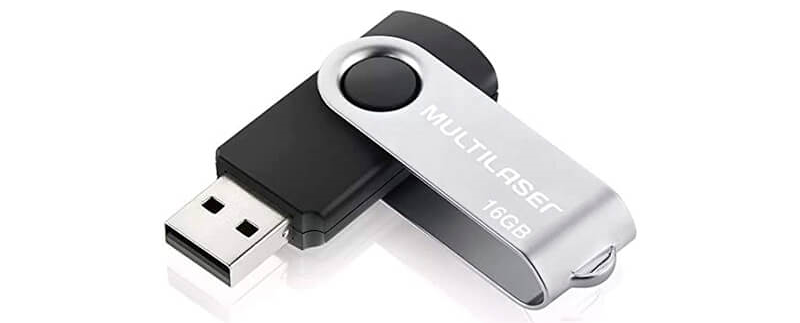
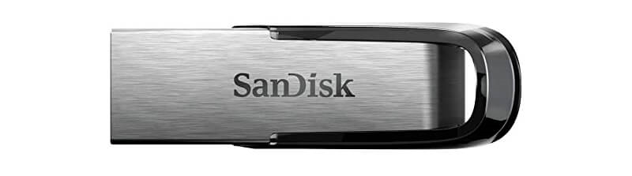
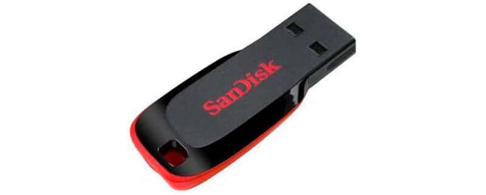
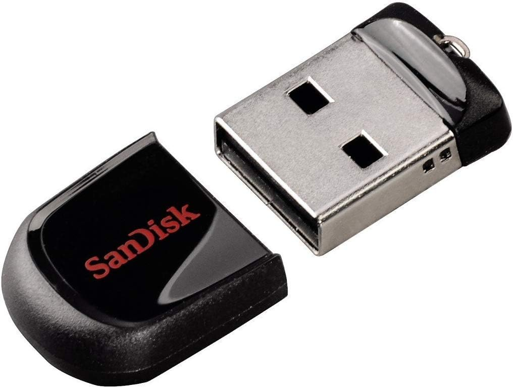
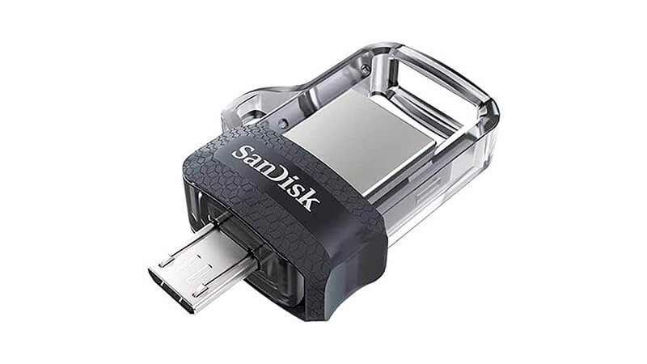
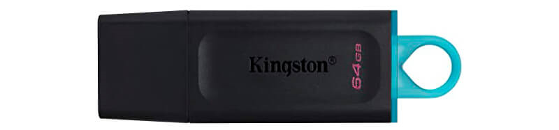
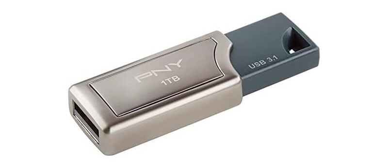

Pen-Drive: Os melhores Modelos
O pen drive é uma ferramenta de armazenamento que apesar de já existir a um certo tempo, ainda é considerada uma das melhores alternativas para quem deseja proteger e transportar seus arquivos para qualquer lugar de forma segura, prática e bastante acessível
Confira a seguir alguns dos melhores modelos do mercado:
1. Pen Drive Multilaser Twist 16GB
O Multilaser Twist é considerado o pen drive 16GB com melhor custo-benefício do mercado, pois além de fornecer uma ótima capacidade de armazenamento, trabalha com um preço bastante acessível e especificações técnicas muito interessantes

Sua estrutura é composta por uma corpo de plástico e um protetor fixo de metal que tem como principal objetivo evitar danos ao conector USB, garantindo uma maior durabilidade ao dispositivo.
Ele utiliza uma interface de conexão USB 2.0, o que proporciona a ele uma velocidade de leitura de 10 MB/s e uma velocidade de gravação de 3 MB/s, perfeito para quem trabalha com arquivos leves, fotos e documentos simples.
Ficha Técnica:
Capacidade: 16GB;
Velocidade de Leitura: 10 MB/s;
Velocidade de Gravação: 3 MB/s;
Interface: USB 2.0;
Proteção para o conector USB;
Dimensões: 12 x 12 x 5cm;
Peso: 75g.
Preço Médio: R$ 18,00
2. Pen Drive 32GB SanDisk Cruzer Ultra Flair
O pen drive SanDisk Cruzer Ultra Flair é uma opção um pouco mais robusta que o modelo anterior, com 32GB de capacidade de armazenamento e uma estrutura metálica bastante resistente, que protege o dispositivo contra quedas ou possíveis acidentes.

Para garantir maiores velocidades de transferência, o Cruzer Ultra Flair trabalha com uma interface USB 3.0, capaz de entregar uma velocidade de até 140 MB/s de leitura sequencial e cerca de 40 MB/s para realizar gravações.
Além disso, caso seja do seu interesse, é possível encontrar este pen drive San Disk nos modelos com: 16GB, 64GB, 128GB, 256GB e até mesmo 512GB de armazenamento, ideal para todos os tipos de uso.
Ficha Técnica:
Capacidade: 32GB;
Velocidade de Leitura: 140 MB/s;
Velocidade Gravação: 40 MB/s;
Interface: USB 3.0;
Dimensões: 0.66 x 4 x 1.32cm;
Peso: 54.4g.
Preço Médio: R$ 41,20
3. Pen Drive 64GB SanDisk Cruzer Blade
Considerado um dos dispositivos mais populares do mercado, o pen drive 64GB SanDisk Blade com toda certeza é a escolha de investimento ideal para quem busca muita capacidade de armazenamento e que ainda seja uma alternativa acessível.

Porém, é importante destacar que este modelo trabalha com uma interface USB 2.0, ou seja, recomendado apenas para quem for armazenar e transferir arquivos, documentos e fotos que não sejam muito pesados.
Além do preço, outra característica muito atrativa deste pen drive 64GB é o seu tamanho bastante compacto e sua estrutura em material plástico, que o tornam um companheiro leve e prático.
Ficha Técnica:
Capacidade: 64GB;
Velocidade de Leitura: N/I;
Velocidade de Gravação: N/I;
Interface: USB 2.0;
Dimensões: 0.74 x 1.75 x 4.14 cm;
Peso: 4.54g.
Preço Médio: R$ 27,90
4.Pen Drive 64GB - Sandisk - Cruzer Fit
Um drive de perfil baixo para notebooks, tablets, tvs e som automotivo
32gb de capacidade num drive usb bem pequeno e portátil
Pendrive muito pequeno e portátil
Com led para monitoramento da atividade do drive

O seu principal ponto é o tamanho, por ser mmuito pequeno, pode ser considerado portátil, porém tem maior chance de perder para quem não teem muita atenção. Mas Ele é bom por não ocupar grande espaço.
Ficha Técnica:
Capacidade: 64GB;
Velocidade de Leitura: 20MB/s;
Velocidade de Gravação: 10MB/s;
Interface: USB 2.0;
Dimensões: 6.6 x 0.9 x 11.3 Cm;
Peso: 4.54g.
Preço Médio: R$ 47,90
5. Pen Drive SanDisk Ultra Dual Drive
Diferente de todos os modelos listados anteriormente, o pen drive 256GB San Disk Ultra Dual Drive é o único dispositivo da lista que consegue se conectar tanto a computadores, como a smartphones, permitindo que você realize transferências de arquivos entre os dois dispositivos de forma prática e ágil.
imagem de um pen drive de 256GB SanDisk com design transparente

Em uma ponta ele possui um conector USB 3.0 compatível com diversos aparelhos, enquanto na outra ponta trabalha com um conector Micro USB, compatível com uma série de smartphones android e tablets.
Para realizar backups e organizar seus arquivos de celular é necessário que você utilize o aplicativo SanDisk Memory Zone e para realizar transferências de arquivos entre diferentes dispositivos é preciso baixar o aplicativo On The Go.
Ficha Técnica:
Capacidade: 256GB;
Velocidade de Leitura: 150 MB/s;
Velocidade de Gravação: Não informado;
Interface: USB 3.0 e Micro USB;
Aplicativo exclusivo de gerenciamento de arquivos;
Dimensões: 3.02 cm x 2.54 cm x 1.17 cm;
Peso: 4.54g.
Preço Médio: R$ 47,90
6. Pen Drive 64GB Kingston DataTraveler Exo Type-A
O mais novo pen drive 64GB da Kingston, conhecido como DataTraveler Exo Type A, utiliza uma interface USB 3.2 e é capaz de entregar cerca de 115 MB/s de velocidade para leitura de arquivos e até 15 MB/s para gravação de arquivos.
imagem de um pen drive de 64GB Kingston com design na cor preta

Sua estrutura é totalmente feita de plástico, vem acompanhada de uma tampa protetora para cobrir o conector USB nos momentos em que ele estiver desconectado dos aparelhos e uma alça grande colorida para que você consiga encaixar o DT Exodia no seu chaveiro com muita facilidade.
Na hora de realizar a compra, é possível selecionar entre diferentes modelos com: 32GB, 64GB ou 128GB de capacidade armazenamento, permitindo ao consumidor escolher o tamanho que melhor se adequa a sua rotina.
Ficha Técnica:
Capacidade: 64GB;
Velocidade de Leitura: 115 MB/s;
Velocidade de Gravação: 15 MB/s;
Interface: USB 3.2 Gen 1;
Tampa Protetora;
Alça Colorida;
Dimensões: 6.73 cm x 2.11 cm x 1.02 cm;
Peso: 11g.
Preço Médio: R$ 31,90
7. Pen Drive PNY Pro Elite 1TB
Para profissionais que trabalham com uma enorme quantidade de arquivos e precisam tornar os processos de transferência mais velozes, o pen drive 1TB PNY Pro Elite é a melhor alternativa disponível no mercado atualmente.

Com 1 TB de capacidade de armazenamento, ele é capaz de armazenar cerca de 200 mil imagens com 18 megapixels de qualidade, mais de 189 mil músicas ou até mesmo 59 horas de vídeos em qualidade 4K Ultra HD.
O PNY Pro Elite trabalha com uma interface USB 3.0 que possui um desempenho muito acima dos outros modelos listados até o momento, entregando até 400 MB/s de velocidade de leitura e cerca de 250 MB/s de velocidade para gravações.
Ficha Técnica:
Capacidade: 1TB;
Velocidade de Leitura: 400 MB/s;
Velocidade de Gravação: 250 MB/s;
Interface: USB 3.0;
Desing Retrátil;
Dimensões: 1.88 cm x 1 cm x 5.59 cm;
Peso: 11g.
Preço Médio: R$ 1.698,90
Como saber escolher o melhor pen drive?
Com tantas opções disponíveis no mercado para investir, saber escolher o melhor dispositivo para utilizar no trabalho ou na escolha, pode acabar se tornando uma tarefa um tanto quanto difícil e bastante confusa.
Por isso quando for comprar seu pen-drive, considere sempre:
Capacidade de armazenamento
Interface
Proteção
Velocidade
Preço
Espero ter ajudado!